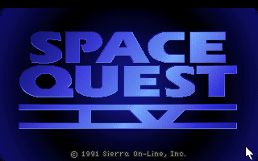
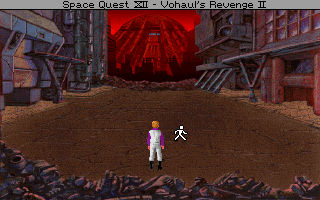

名稱：宇宙傳奇4：時空穿越者 (Space Quest IV: Roger Wilco and the Time Rippers，英文版)
簡介：Sierra 1991年出品的冒險解謎遊戲，台灣則由智冠和新世界代理進口，1994年收錄在
「五合一（Collector's Edition）」光碟裡，2006年收錄在「六合一（Collection）」
光碟裡 [待補]。


備註：本版為光碟版（有語音）
保護：無，光碟版要放入光碟才有語音（或拷貝RESOURCE.AUD到安裝目錄，並修改RESOURCE.CFG
裡的audio，指向安裝目錄）
備註：合輯光碟版同1992年1.0光碟版。
備註：磁片版進入遊戲若當死，請執行INSTALL.EXE調整音效卡（聲霸卡比較會有問題，建議
Adlib）。
備註：光碟版執行時，電腦速度不可太快，否則遊戲可能會偵測不到聲霸卡。
檔案：sq4-1052.rar = 1.052磁片版（智冠版）
sq4-11.rar = 1.1磁片版
操作：光碟版可在進入遊戲後，到選項裡切換語音（Speech）或字幕（Text）。